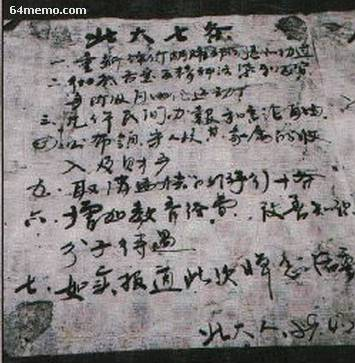

前一个帖子，俺介绍了胡先帝的悼念活动3天内席卷天朝各地。到了4月18日这天，帝都的大学生们已经不满足于纯粹的悼念。他们想借助这次声势浩大的悼念，提出进一步的政治诉求。所以，18日这天出现了（六四运动中）第一次政治性的抗议活动——人民大会堂静坐请愿。
话说17日晚间，有几位北大的学生制作了一块10米长2米宽的横幅，上书“中国魂——部分北大校友暨师生敬挽”。然后拿着这个长条幅在校园内游行。到了深夜时分，参与校内游行的学生越聚越多。大伙儿就提议，干脆到广场上去。于是，一干人等（据说有上千人）就从北大校园一路走到天安门（到达广场的时候已是次日凌晨4点，精神可嘉）。
那会儿还是大清早，广场上除了学生，大概也没多少市民。于是这拨学生就开始考虑接下来该咋办？估计很多学生对2年多以前的“八六学潮”还是记忆犹新。“八六学潮”没有持久，有很多原因（俺的分析在“这里”），其中之一就是：缺乏明确的，统一的政治诉求。所以，纪念碑周围的学生们就开始讨论他们的政治诉求。最终商定了七条要求——也就是后来闻名海内外的“北大七条”。
为了写这个系列，俺特地参考了不少相关的资料（书籍、网站），以求尽量真实。关于“北大七条”，俺发现有两个版本，流传较广。
下面俺来考据一下，哪个版本比较靠谱。
一 公正评价胡耀邦的政绩，肯定民主自由的宽松的政治环境；
二 彻底否定“清除精神污染”与“反自由化”运动，并为这次运动中蒙受不白之冤的人平反；
三 要求党和国家领导人及其子女向全国人民公布其财产状况；
四 允许民办报纸，开放报禁，制定新闻法；
五 增加教育经费，提高知识分子的待遇；
六 取消北京人大常委会违反宪法而制定的限制游行的“十条”；
七 对此次活动作出公开的报道，见诸党政机关报。
一 重新评价胡耀邦同志的是非功过，肯定其民主、自由、宽松、和谐的观点；
二 彻底否定“清除精神污染”和“反对资产阶级自由化”，对蒙受不白之冤的知识分子给予平反；
三 国家领导人及其家属年薪及一切形式的收入向人民公开，反对贪官污吏；
四 允许民间办报，解除报禁，实行言论自由；
五 增加教育经费，提高知识分子待遇；
六 取销北京市政府制定的开于游行示威的“十条”规定；
七 要求政府领导人就政府失误向全国人民作出公开检讨，并通过民主形式对部份领导实行改选。
这两个版本的头6条大同小异。但是【第7条完全不同】。那么，到底哪一个版本是真实的捏？
版本1的出处比较丰富，有如下几个：
1. 香港记者协会出版的《人民不会忘记——八九民运实录》
2. 当事人之一张伯笠所写的回忆录《逃亡者》
3. 当事人之一李进进的文集（相关页面在"这里"）
4. 《“六四”事件民间白皮书》第30页（书中的备注称：提及的“北大七条”引自李进进文集）
另外还有如下照片，也是这个版本的佐证。

（北大七条）
版本2的出处比较单一，主要来自于《天安门文件》（又名《中国“六·四”真相》）。
另外，维基百科的“六四事件”词条不知何故也采用此版本。不过维基百科还算客观，在该词条的备注中，注明了“北大七条”存在多种版本，维基引用的是《中国“六·四”真相》的版本。
从资料出处来看：版本1有多个比较可信的来源。比如：张伯笠是那天参与讨论北大七条的学生之一；李进进是当天向人大常委会递交请愿书的学生代表之一。
从当时形势来看：18日那天，大学生刚开始准备政治请愿，学生和政府之间的矛盾还没有激化，不太可能提出像“版本2”这么激进的政治要求。
综上所述，俺倾向于认为：版本1是真实的。
至于《天安门文件》一书，为啥会出现如此严重的失实，俺顺便来聊一下：
在前一个帖子，俺大致介绍过这本书的来历。此书很大一部分内容，是当时的党国爪牙（比如国安人员）搜集的报告，这些报告会逐级上传，最终到达裆中央。照理说，“北大七条”是学生提出的最主要的政治诉求，当时广场上肯定有便衣人员把这一幕给详细记录下来。这帮爪牙连某某大学在几月几日几点几分贴出几张大字报，都数得一清二楚。如此敬业的爪牙，没道理把“北大七条”这么重要的东西给搞错了。
所以，比较大的可能性是：爪牙们提交报告之后，在到达裆中央之前，中途被人篡改了。那么，会是谁干的捏？
为了说清楚这个问题，俺先来聊一下当时朝廷高层的情况。本系列的头几个帖子，俺已经花了很多口水，介绍当时朝廷中的两大派系——改革派和保守派。这两派的关系，可谓水火不容。想当初老胡就是因为“八六学潮”没处理好而下台。老胡被废之后，保守派本来想趁机拿下总书记的宝座，可惜老邓又扶了赵紫阳，让保守派美梦落空。如今，大学生借着悼念老胡，掀起新一轮学潮。对保守派而言，这是个天赐良机。对这次学潮，老赵如果没处理好，也很可能下台并导致改革派元气大伤，那保守派就可以从中得利。
而当时帝都的市长是陈希同，市委书记是李锡铭。这两个家伙恰好都属保守派，据说他俩跟李鹏的关系还挺密切。而李鹏这个人，一直不满足于总理这个位置，老想把赵紫阳挤掉，自己当总书记。所以，当这份报告送到北京市政府手中的时候，很可能就被篡改了。至于是北京市一级的人自作主张篡改，抑或是得到更高一级官员的授意，就不好说了。
篡改者的目的，就是故意夸大学生的要求，让高层（主要是八元老）觉得学生很激进。大伙儿想想看，“北大七条”的最后一条被改为：
以上部分是俺个人的推测，欢迎列位看官拍砖。
分析完“北大七条”的真伪，接下来稍微介绍一下那天的请愿过程。
话说那天拟定出7条政治诉求后，还没到上班时间。于是学生们就到人民大会堂门前等着（人民大会堂就在天安门广场边上）。等到里面上班了，就选出4个学生代表（王丹、李进进、郭海峰、张志勇）进大会堂提交请愿书。
当时和学生代表交涉的，是人大信访办的官员。这些官员根本就没把这些学生放在眼里，拿到请愿书之后，只是简单说了句“要研究一下”，就想把学生们打发了。大会堂门口的这些学生，当然晓得政府官员在敷衍了事。但是他们都比较犟，一定要全国人大派出正式代表，接受学生的请愿书。而全国人大的官员，在上级没有指示之前，又不敢轻举妄动。于是双方就这么耗着——从上午耗到下午，再从下午耗到晚上。很多学生是17日深夜从北大徒步走到广场，然后又在大会堂门口不吃不喝，静坐到18日晚上，实在是毅力惊人。
随着时间的流逝，大会堂门口的学生越来越多，各个大学的人马都加入进来——很多学生本来要到纪念碑搞悼念活动的。搞完悼念，也顺便加入到静坐的队伍中。据李进进回忆，他当时已经做好连续静坐几天几夜的准备，还叫人回北大拿些棉衣棉被。
到了晚上7点多，随着静坐队伍迅速扩大，官方终于做出让步——人大常委会派出几个知名的代表（以“宋世雄、刘延东”为首）到大会堂外面跟学生见面，并当面接受了请愿书。顺便说一下：刘延东当时任全国青联主席，后来高升至政治局委员；至于宋世雄，央视体育频道的名嘴，90前的网友应该很熟悉。
既然人大已经派代表接受了学生的请愿，一部分现场静坐的学生认为目的已经达到，纷纷散去；但还有一部分学生不满意——毕竟刘延东当时只是个小官，宋世雄虽然名气大，也还是个小官。这部分学生认为，政府应该派出级别更高的官员出来跟学生见面并接受请愿书。于是，这群不甘心的学生就高举着“中国魂”的大横幅，一路奔向中南海（朝廷重量级的官员都住在那儿）。之后，就发生了“六四运动”中，第一起流血事件——新华门事件。
下一个帖子，俺介绍一下新华门事件的经过。
回到本系列的目录
★“北大七条”的出台
话说17日晚间，有几位北大的学生制作了一块10米长2米宽的横幅，上书“中国魂——部分北大校友暨师生敬挽”。然后拿着这个长条幅在校园内游行。到了深夜时分，参与校内游行的学生越聚越多。大伙儿就提议，干脆到广场上去。于是，一干人等（据说有上千人）就从北大校园一路走到天安门（到达广场的时候已是次日凌晨4点，精神可嘉）。
那会儿还是大清早，广场上除了学生，大概也没多少市民。于是这拨学生就开始考虑接下来该咋办？估计很多学生对2年多以前的“八六学潮”还是记忆犹新。“八六学潮”没有持久，有很多原因（俺的分析在“这里”），其中之一就是：缺乏明确的，统一的政治诉求。所以，纪念碑周围的学生们就开始讨论他们的政治诉求。最终商定了七条要求——也就是后来闻名海内外的“北大七条”。
★“北大七条”的两个版本
为了写这个系列，俺特地参考了不少相关的资料（书籍、网站），以求尽量真实。关于“北大七条”，俺发现有两个版本，流传较广。
下面俺来考据一下，哪个版本比较靠谱。
◇版本1
一 公正评价胡耀邦的政绩，肯定民主自由的宽松的政治环境；
二 彻底否定“清除精神污染”与“反自由化”运动，并为这次运动中蒙受不白之冤的人平反；
三 要求党和国家领导人及其子女向全国人民公布其财产状况；
四 允许民办报纸，开放报禁，制定新闻法；
五 增加教育经费，提高知识分子的待遇；
六 取消北京人大常委会违反宪法而制定的限制游行的“十条”；
七 对此次活动作出公开的报道，见诸党政机关报。
◇版本2
一 重新评价胡耀邦同志的是非功过，肯定其民主、自由、宽松、和谐的观点；
二 彻底否定“清除精神污染”和“反对资产阶级自由化”，对蒙受不白之冤的知识分子给予平反；
三 国家领导人及其家属年薪及一切形式的收入向人民公开，反对贪官污吏；
四 允许民间办报，解除报禁，实行言论自由；
五 增加教育经费，提高知识分子待遇；
六 取销北京市政府制定的开于游行示威的“十条”规定；
七 要求政府领导人就政府失误向全国人民作出公开检讨，并通过民主形式对部份领导实行改选。
◇哪个版本是真的？
这两个版本的头6条大同小异。但是【第7条完全不同】。那么，到底哪一个版本是真实的捏？
版本1的出处比较丰富，有如下几个：
1. 香港记者协会出版的《人民不会忘记——八九民运实录》
2. 当事人之一张伯笠所写的回忆录《逃亡者》
3. 当事人之一李进进的文集（相关页面在"这里"）
4. 《“六四”事件民间白皮书》第30页（书中的备注称：提及的“北大七条”引自李进进文集）
另外还有如下照片，也是这个版本的佐证。
（北大七条）
版本2的出处比较单一，主要来自于《天安门文件》（又名《中国“六·四”真相》）。
另外，维基百科的“六四事件”词条不知何故也采用此版本。不过维基百科还算客观，在该词条的备注中，注明了“北大七条”存在多种版本，维基引用的是《中国“六·四”真相》的版本。
从资料出处来看：版本1有多个比较可信的来源。比如：张伯笠是那天参与讨论北大七条的学生之一；李进进是当天向人大常委会递交请愿书的学生代表之一。
从当时形势来看：18日那天，大学生刚开始准备政治请愿，学生和政府之间的矛盾还没有激化，不太可能提出像“版本2”这么激进的政治要求。
综上所述，俺倾向于认为：版本1是真实的。
★《天安门文件》为何失实？
至于《天安门文件》一书，为啥会出现如此严重的失实，俺顺便来聊一下：
在前一个帖子，俺大致介绍过这本书的来历。此书很大一部分内容，是当时的党国爪牙（比如国安人员）搜集的报告，这些报告会逐级上传，最终到达裆中央。照理说，“北大七条”是学生提出的最主要的政治诉求，当时广场上肯定有便衣人员把这一幕给详细记录下来。这帮爪牙连某某大学在几月几日几点几分贴出几张大字报，都数得一清二楚。如此敬业的爪牙，没道理把“北大七条”这么重要的东西给搞错了。
所以，比较大的可能性是：爪牙们提交报告之后，在到达裆中央之前，中途被人篡改了。那么，会是谁干的捏？
为了说清楚这个问题，俺先来聊一下当时朝廷高层的情况。本系列的头几个帖子，俺已经花了很多口水，介绍当时朝廷中的两大派系——改革派和保守派。这两派的关系，可谓水火不容。想当初老胡就是因为“八六学潮”没处理好而下台。老胡被废之后，保守派本来想趁机拿下总书记的宝座，可惜老邓又扶了赵紫阳，让保守派美梦落空。如今，大学生借着悼念老胡，掀起新一轮学潮。对保守派而言，这是个天赐良机。对这次学潮，老赵如果没处理好，也很可能下台并导致改革派元气大伤，那保守派就可以从中得利。
而当时帝都的市长是陈希同，市委书记是李锡铭。这两个家伙恰好都属保守派，据说他俩跟李鹏的关系还挺密切。而李鹏这个人，一直不满足于总理这个位置，老想把赵紫阳挤掉，自己当总书记。所以，当这份报告送到北京市政府手中的时候，很可能就被篡改了。至于是北京市一级的人自作主张篡改，抑或是得到更高一级官员的授意，就不好说了。
篡改者的目的，就是故意夸大学生的要求，让高层（主要是八元老）觉得学生很激进。大伙儿想想看，“北大七条”的最后一条被改为：
要求政府领导人就政府失误向全国人民作出公开检讨，并通过民主形式对部份领导实行改选。这样一种说法，无疑会激怒八元老，尤其会激怒老邓。后续的帖子，俺还会提到保守派的另外一些伎俩——通过这些伎俩，保守派逐步地让老邓觉得，这帮大学生已经不是“人民内部矛盾”，而是“敌我矛盾”。
以上部分是俺个人的推测，欢迎列位看官拍砖。
★人民大会堂的请愿
分析完“北大七条”的真伪，接下来稍微介绍一下那天的请愿过程。
话说那天拟定出7条政治诉求后，还没到上班时间。于是学生们就到人民大会堂门前等着（人民大会堂就在天安门广场边上）。等到里面上班了，就选出4个学生代表（王丹、李进进、郭海峰、张志勇）进大会堂提交请愿书。
当时和学生代表交涉的，是人大信访办的官员。这些官员根本就没把这些学生放在眼里，拿到请愿书之后，只是简单说了句“要研究一下”，就想把学生们打发了。大会堂门口的这些学生，当然晓得政府官员在敷衍了事。但是他们都比较犟，一定要全国人大派出正式代表，接受学生的请愿书。而全国人大的官员，在上级没有指示之前，又不敢轻举妄动。于是双方就这么耗着——从上午耗到下午，再从下午耗到晚上。很多学生是17日深夜从北大徒步走到广场，然后又在大会堂门口不吃不喝，静坐到18日晚上，实在是毅力惊人。
| （香港《亚洲新闻周刊》89年5月那期的封面 |
| 地上铺的是“中国魂”横幅，横幅上放的白纸写着“北大七条”， |
| 拿话筒的是李进进，拿相机拍照的是政法大学的项小吉） |
随着时间的流逝，大会堂门口的学生越来越多，各个大学的人马都加入进来——很多学生本来要到纪念碑搞悼念活动的。搞完悼念，也顺便加入到静坐的队伍中。据李进进回忆，他当时已经做好连续静坐几天几夜的准备，还叫人回北大拿些棉衣棉被。
到了晚上7点多，随着静坐队伍迅速扩大，官方终于做出让步——人大常委会派出几个知名的代表（以“宋世雄、刘延东”为首）到大会堂外面跟学生见面，并当面接受了请愿书。顺便说一下：刘延东当时任全国青联主席，后来高升至政治局委员；至于宋世雄，央视体育频道的名嘴，90前的网友应该很熟悉。
既然人大已经派代表接受了学生的请愿，一部分现场静坐的学生认为目的已经达到，纷纷散去；但还有一部分学生不满意——毕竟刘延东当时只是个小官，宋世雄虽然名气大，也还是个小官。这部分学生认为，政府应该派出级别更高的官员出来跟学生见面并接受请愿书。于是，这群不甘心的学生就高举着“中国魂”的大横幅，一路奔向中南海（朝廷重量级的官员都住在那儿）。之后，就发生了“六四运动”中，第一起流血事件——新华门事件。
下一个帖子，俺介绍一下新华门事件的经过。
回到本系列的目录
版权声明
本博客所有的原创文章，作者皆保留版权。转载必须包含本声明，保持本文完整，并以超链接形式注明作者编程随想和本文原始地址：
https://program-think.blogspot.com/2012/01/june-fourth-incident-12.html
本博客所有的原创文章，作者皆保留版权。转载必须包含本声明，保持本文完整，并以超链接形式注明作者编程随想和本文原始地址：
https://program-think.blogspot.com/2012/01/june-fourth-incident-12.html